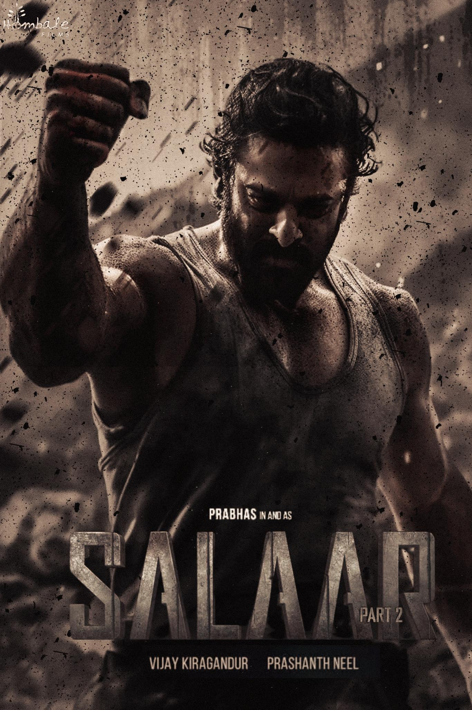

Salaar: Part 1 – Ceasefire is a 2023 Indian action thriller directed by Prashanth Neel and produced by Hombale Films. The film stars Prabhas in a powerful lead role, with Prithviraj Sukumaran as a key character, and is set in the fictional, violent kingdom of Khansaar. The story focuses on friendship, loyalty, power struggles, and betrayal, presented through intense action, dark visuals, and strong emotions. At the box office, Salaar was a major commercial success, registering a massive opening and earning blockbuster collections worldwide, crossing several high-revenue milestones and ranking among the top-grossing Indian films of the year.
KGF: Chapter 2 - is a 2022 Indian action drama directed by Prashanth Neel and produced by Hombale Films. It stars Yash as Rocky, who rises from a feared gangster to the ruler of the Kolar Gold Fields. The movie focuses on power, ambition, revenge, and dominance, with grand action scenes and strong dialogues. At the box office, KGF 2 became a historic blockbuster, breaking multiple records across India and overseas. It crossed the ₹1,000 crore mark worldwide,making it one of the highest-grossing Indian films ever and a milestone in Indian cinema.
Jana nayagan - Jananayagan is an upcoming Tamil political action drama starring Vijay in the lead role. The film is expected to focus on leadership, social justice, and political transformation, portraying Vijay in a powerful mass-oriented character. Due to Vijay’s strong fan base and previous box-office successes, Jananayagan has created huge expectations among audiences. Even before release, the movie has gained strong buzz through promotions and announcements. Trade experts predict that Jananayagan will open with massive collections and has the potential to become a blockbuster, continuing Vijay’s successful box-office run in Tamil cinema.
Mersal - Mersal is a 2017 Tamil action thriller directed by Atlee and starring Vijay in a triple role. The movie blends action, emotion, and social messages, especially focusing on corruption in the medical system. Vijay’s performance, A.R. Rahman’s music, and the strong storyline were widely appreciated. At the box office, Mersal was a huge commercial success, earning over ₹250 crore worldwide. It became one of the highest-grossing Tamil films of its time and strengthened Vijay’s position as a leading star with consistent blockbuster films.
Soorarai Pottru - Soorarai Pottru is a 2020 Tamil drama film directed by Sudha Kongara and produced by Suriya and Jyothika. The movie stars Suriya in the lead role and is inspired by the life of aviation entrepreneur G. R. Gopinath. It tells the story of a determined man who dreams of making air travel affordable for common people. The film highlights perseverance, social equality, and innovation, supported by strong performances, emotional depth, and powerful music. At the box office, Soorarai Pottru received massive critical acclaim and audience appreciation. It became one of the most celebrated Tamil films of the year and gained wide popularity through digital release, earning long-lasting success and recognition.